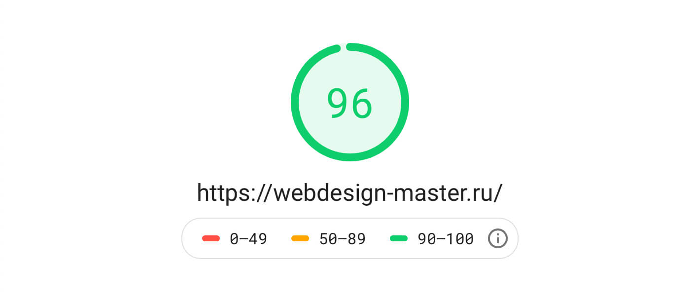

Сегодня мы поговорим о том, как ускорить загрузку сайта. Мы научимся проводить анализ скорости загрузки с помощью сервиса PageSpeed Insights от Google. Это сервис, который анализирует сайт и дает рекомендации по его оптимизации.

Полезные материалы
- OptimizedHTML 5 - легкий оптимизированный стартер для верстки сайтов.
Важное примечание! Google PageSpeed Insights дает лишь рекомендации по оптимизации страниц, это всего лишь цифры. Они ни в коем случае не должны быть строгим ориентиром и хоть как-то влиять на функционал сайта. Если для достижения лучшего результата PageSpeed Insights вам нужно менять всю структуру проекта, это может быть опасно и отрицательно повлиять на ранжирование сайта в поисковых системах и вот почему. Поисковики, в первую очередь, оценивают удобство сайта для пользователей, поменяв что-то кардинально, вы можете сделать только хуже. Это необходимо объяснять заказчикам, если вы работаете над клиентскими проектами. Результат таких манипуляций может быть непредсказуем, зачастую лучше обойтись базовыми правилами, которые я приведу далее и не стараться получить максимально высокую оценку сервиса, в ущерб пользовательского опыта. Были случаи, когда структура сайта менялась даже незначительно и поисковый трафик безвозвратно падал. Все рекомендации данного урока основаны на достаточно внушительном опыте работы автора с клиентскими проектами.
Оптимизируйте осторожно.
1. Стили и скрипты
Из практики, работа по оптимизации стилей и скриптов заключается в сжатии и конкатенации всех стилей или скриптов в один минифицированный файл. Зачастую, разделение файлов на отдельные, имеет смысл только в каких-то сложных крупных проектах, в большинстве случаев необходимости в этом нет. Пользователь может воспользоваться любой страницей вашего сайта, а разбиение на отдельные файлы для разных страниц, кроме незначительного увеличения количества запросов ничего не даст. Немного увеличенные в размере файлы отрицательной роли для оптимизации не сыграют, если, например, пользователь воспользовался только одной страницей, а загрузилась вся библиотека. То-есть, разделение - это и не хорошо и не плохо, просто PageSpeed выдаст вам лишнюю рекомендацию по уменьшению количества запросов.
- Для оптимизации CSS я использую оптимайзер clean-css в реализации gulp-clean-css в проектах с использование Gulp.
- Для оптимизации JS я использую модуль uglify-es, как наиболее эффективный, актуальный инструмент в реализации gulp-uglify-es.
- Конкатенацию можно реализовать любыми доступными инструментами, я предпочитаю обычный gulp-concat.
Не смотря на то, что Google PageSpeed иногда рекомендует загружать и стили и скрипты в конце документа, я рекомендую стили все-же загружать классическим способом в тег <link>, размещенный в теге <head>, а скрипты в конце документа, перед закрывающим тегом </body>, см. OptimizedHTML 5 - app/index.html.
<!DOCTYPE html>
<html lang="en">
<head>
<meta charset="utf-8">
<title>Document</title>
<link rel="stylesheet" href="path/to/styles.min.css">
</head>
<body>
<script src="path/to/scripts.min.js"></script>
</body>
</html>
2. Шрифты
Все, что касается шрифтов я могу уместить в одной фразе - используйте один формат woff2. Он достаточно легковесный и поддерживается везде, где только можно в настоящее время. Тот-же Google Fonts использует этот формат шрифтов как единственный. Данный момент мы обсуждали в видео-презентации OptimizedHTML 5. Для конвертации и сжатия любого шрифта в woff2 рекомендую использовать сервис Font Squirrel. Это быстрый и эффективный способ получить шрифт в нужном формате.
3. Изображения
Не зависимо от того, какой формат или форматы изображений используются в проекте, самое главное правило - старайтесь не использовать изображения, по своей физической ширине значительно превышающие размер вьюпорта, в котором они находятся. Что это значит. Допустим, вы используете 100% ширину изображения в теге <img> или в другом контейнере, размер которого, например, 700 пикселей (это можно посмотреть в инструментах разработчика любого браузера), а само изображение, загружаемое в контейнер имеет ширину 1000 пикселей. В таком случае, не зависимо от того, насколько хорошо у вас сжато изображение, Google PageSpeed укажет вам на то, что изображение необходимо оптимизировать еще, хотя на практике это приведет только к значительной потере качества.
Данное правило действует и для устройств с HiDPI - дисплеями, но немного по-другому. Например, для Retina или для мониторов с масштабированием интерфейса более 100%. Если мы имеем вьюпорт 700 пикселей на ретине, изображение, загружаемое для таких экранов не должно иметь разрешение свыше 1400 пикселей по ширине, так как масштабирование экрана на ретине 200%. Однако создавать изображения для таких экранов отдельно не обязательно, можно просто проконтролировать, чтобы качество изображения после сжатия было приемлемым, а вьюпорт для предполагаемого 100%-го масштабирования содержал изображение не намного его превышающее.
Если при разработке вы учитываете HiDPI экраны, такие, как Retina и другие с масштабированием свыше 100%, можно использовать атрибут srcset для тегов <img>, чтобы для обычных экранов загружать обычные изображения, а для Retina - увеличенные в 2 раза. Однако на практике я использую это правило и адаптацию для Retina только в своих личных проектах, так как работа с такими изображениями требует технической подготовки. В клиентских проектах, где работают контент-менеджеры, соблюдать эти правила сложно, да и не обязательно. Поэтому я убрал из OptimizedHTML 5 возможность создания изображений @2x формата. В этом нет смысла. Достаточно просто обрезать и сжимать изображения на бэкенде средствами фреймворка или CMS, в пределах разумного, чтобы менеджер, загрузив изображение, весом, например, 8 Мб не затруднил отображение контента на странице.
Почему я написал именно «значительно» превышающих размер вьюпорта - потому, что в условиях разработки Responsive проектов невозможно получить фиксированный размер вьюпорта изображения, в зависимости от экрана или устройства. На малых разрешениях вьюпорт уменьшается, а изображение, соответственно, остается неизменным. В таких случаях можно использовать вышеупомянутый атрибут srcset, который будет загружать разные изображения по размеру для разных экранов, но это, по-моему из разряда мракобесия, которое усложняет разработку и поддержку проектов.
Что касается Lazy Load, подгрузки изображений по мере их отображения, данную технику я рекомендую использовать только на тех сайтах, где изображений очень много. Например, в списках товаров или в длинных галереях. Если изображений не много, данная оптимизация хоть и может повлиять на оценку PageSpeed Insights, однако это как мертвому припарка. Поэтому в контентных, статейных проектах, коммерческих сайтах и визитках данное правило можно опустить и не выполнять отложенную загрузку. Однако если у вас очень много изображений на одной странице - Lazy Load обязателен.
4. Бэкенд
Данный раздел является, на мой взгляд, важнейшим. Вы можете сколько угодно оптимизировать стили, собирать скрипты в кучу, уменьшать изображения до 1 пикселя, однако если у вас тяжелый и неповоротливый бэкенд, который 5 секунд генерирует содержимое и 2 секунды соединяется с базой, это очень плохо. И плохо даже не столько для оценки PageSpeed, сколько для пользователей и поисковых систем. Это реальная проблема. Если я захожу на сайт и вижу белую страницу более 3-х секунд, просто закрываю вкладку и иду дальше. Зачастую, эта проблема - результат неграмотной разработки, использования множества тяжелых плагинов, перегруженного бэкенда. Последовательность работы такой городьбы сложно отследить и оптимизировать. Чтобы у вас не случилось таких проблем, разрабатывайте сайты с использованием какой-либо CMS по документации и следуйте рекомендованным разработчиками самой системы правилам.
Не хотел показывать пальцем, пример сам напрашивается. Из опыта, лидером по таким проблемам с бэкендом является WordPress. Ничего не хочу говорить про эту систему плохого, здесь проблема скорее в подавляющем большинстве криворуких разработчиков как плагинов, шаблонов, так и сайтов. При грамотном подходе, ориентируясь на Codex, можно сделать вполне нормальный оптимизированный проект. Однако, на практике, среди готовых проектов такое встречается крайне редко - реализация грамотного подхода при разработке с использованием данной CMS довольно сложная и затратная по времени задача для среднего разработчика, придется отказаться от множества плагинов сомнительного качества и писать все самому. Когда ваши задачи выходят за рамки скачивания и кастомизации готовых шаблонов и плагинов, приходит понимание правильной модели разработки, MVC здесь лидер. Я предпочитаю использовать другие системы, которые позволяют контролировать каждый этап разработки - от создания конкретных плагинов, до разработки всего функционала на более низком уровне. В настоящее время лидерами для меня являются Laravel, Opencart и Winter CMS. Это очень прозрачный MVС у всех систем и возможность контролировать чистоту кода как бэкенда на уровне архитектуры, так и фронтенда, без танцев с бубном.
Однако, использование любой CMS или фреймворка - это сразу минус 5-10 баллов Google PageSpeed, особенно без кеширования, так как на генерацию бэкенда и обращения к базам данных уходит время. Поэтому в своих личных проектах и некоторых клиентских, где не нужен бэкенд, я использую генератор статики Jekyll. Сайт, созданный с использованием Jekyll представляет собой генерацию статических файлов, собранную единожды, например, при написании статьи, добавления другого контента или после внесения каких-либо правок. Лично для меня это по-прежнему самая лучшая, идеальная контентная система, которую я рекомендую всем, кому не нужен бэкенд и требуется молниеносная скорость и эффективность сайта. Сайт WebDesign Master сгенерирован с использованием Jekyll, можете оценить его реальную скорость работы.
Что касается оптимизации бэкенда клиентских проектов, рекомендую использовать инструменты оптимизации, доступные для конкретного фреймворка или CMS.
5. Кеширование сервера
Для всех проектов рекомендую использовать директивы из файла ht.access, который вы найдете в стартере для верстки OptimizedHTML 5. Здесь прописаны, на мой взгляд, самые эффективные настройки сервера для кеширования изображений, стилей, скриптов, шрифтов и других ресурсов. Данный пункт реально добавит вам десятки баллов PageSpeed, без боли.
Если вы используете Winter CMS, править .htaccess вручную не обязательно - можно, например, использовать плагин Speedy, который сделает эту работу за вас.
6. Реальная эффективность сайта
Не стоит забывать, что огромное значение имеет реальная эффективность сайта, пользовательский опыт, показатели отказа. Если ваш сайт реально интересен и привлекателен - это будет намного важнее для поисковых систем, чем все остальные правила вместе взятые. Если сайт плох с пользовательской точки зрения, никакая оптимизация не поможет.
Мракобесие
В данном разделе рассмотрим список рекомендаций, которые на практике в реальных проектах, не имеют особого смысла, но до сих пор мелькают в рекомендациях по оптимизации для Google PageSpeed. Даже если подобные рекомендации и могут повлиять на оценку сервиса, в реальных условиях это никак не повлияет на ранжирование или удобство использования.
- Использовать async для всех скриптов. Данный параметр может повлиять на оценку, но в реальности все ресурсы загружаются в любом случае. Используйте async только там, где асинхронная загрузка действительно необходима, например, при загрузке виджетов или ресурсов с другого сервера.
- Боязнь больших библиотек и плагинов. Можете использовать абсолютно любые библиотеки, вроде jQuery или абсолютно любые плагины, вроде огромного Swiper на ванильном JS. Если все скрипты в одном файле и сжаты - можете быть спокойны. Намного хуже писать свой велосипед плагина из 10-ти строк кода, который работает кое-как и не везде. Это только ухудшит пользовательский опыт или вообще сломает экспириенс, если на данном функционале завязана значительная часть взаимодействия со страницей. Проще говоря: каруселька с товарами не работает, посетитель ушел, поисковик это отметил, сайт провалился. Нынешние скорости интернета позволяют загружать файлы библиотек и скрипты, содержащие библиотеки довольно быстро. Если бы это было не так, все изображения с сайтов у вас грузились бы по два часа. Ваша библиотека или минифицированный JS-файл - это лишь капля в море в общем потоке загружаемых ресурсов.
- Загрузка стилей первого экрана в тег <style>. Знакомая практика для всех, кто занимался оптимизацией страниц. Данный костыль может повлиять на оценку PageSpeed, однако значительно усложнит разработку и поддержку сайта. Использовать или нет - решать вам. Я давно отказался от этого приема.
- Использование WEBP формата изображений с фоллбеком на обычные или без него. Тоже спорный тренд для угоды цифрам PageSpeed. Формат неплох, имеет хорошее сжатие без заметного ущерба качеству. Его можно использовать, если есть желание. Я знаю некоторые студии, в которых практикуется подключение модуля PageSpeed для Nginx. Он отдает WEBP только тем браузерам, которые умеют с ним работать. На практике, это лишь усложняет разработку, требует написание фоллбеков и генерацию дополнительных изображений, а в случае работы с какой-либо CMS, вообще лишает все мероприятие смысла, ведь пользователь или контент-менеджер будет использовать тот формат, который подвернется. Если вы используете CMS или фреймворк, оптимизируйте и сжимайте популярные типы изображений средствами самой системы на бэкенде. PageSpeed, конечно, заметит возможность еще большего сжатия изображений, но в этом нет ничего страшного. Это просто рекомендация, выданная машиной на основе анализа, это ее работа. Все должно быть в пределах разумного.
- Использование атрибута srcset или тега <picture> для загрузки различных форматов изображений, предназначенных для разных экранов. Данный пункт уже обсудили сегодня в разделе 3 - Изображения. Заморочиться можно, но смысла особого нет.
- Спрайты. Довольно популярная методика из 2010-х, которая заключается в объединении изображений или иконок в спрайты с последующим выводом через координаты. Сейчас не имеет никакого смысла, сложна в реализации, далека от контент-менеджеров. Количество запросов к серверу, создаваемое 10-ю иконками или 1 запрос к спрайту ощутимой разницы в реальной оптимизации не дадут, а вот внесение правок, добавление иконок и любые другие изменения требуют дополнительных временных затрат.
Единственной реальной проблемой при оптимизации сайта, которая может повлиять как на скорость загрузки сайта, так и на показатель PageSpeed - это виджеты сторонних сайтов, различные метрики и загрузка ресурсов с CDN. Это виджеты обратной связи, комментариев, групп в социальных сетях, плагины, библиотеки, сервисы статистики и так далее. Они подгружают ресурсы с других серверов и управлять их кешированием или скоростью загрузки невозможно. Могу посоветовать только использовать как можно меньше таких виджетов, не пользоваться шрифтовыми сервисами и прочим, а также, по возможности, загружать скрипты с таких ресурсов, используя атрибут async, загружать виджеты методом отложенной загрузки, если они не находятся на первом экране. Если виджет или ресурс необходим проекту жизненно, его не возможно перенести на рабочий сервер, сделать асинхронную или отложенную загрузку, ничего не остается, кроме как смириться с оценкой и не переживать по этому поводу.
Что ж. Как видите, в настоящее время не стоит заниматься мракобесием и выполнять сложные манипуляции со структурой страниц, свойствами тегов и прочим для достижения заветной «соточки», нужно лишь придерживаться базовых правил по сжатию ресурсов, настроить кеширование на сервере и оптимизировать вашу систему управления контентом, если такая возможность есть. Если ваш сайт в зеленой зоне или в топе оранжевой и самое главное, работает достаточно быстро - этого вполне достаточно. А если хочется увеличить посещаемость - лучше подумать о том, чтобы сделать сайт более интересным.
Премиум уроки от WebDesign Master


Другие уроки по теме «Инструменты»
- Настройка Parcel для веб-разработки
- Tailwind CSS для начинающих. Подробный урок по подключению, настройке и использованию
- Настройка VS Code для веб-разработки
- Starter - Простой стартер для веб-разработки
- Урок по хостингу от А до Я. Сайты, базы, домены, SSL, SSH, sFTP
- Gulp - Актуальное и исчерпывающее руководство для самых маленьких